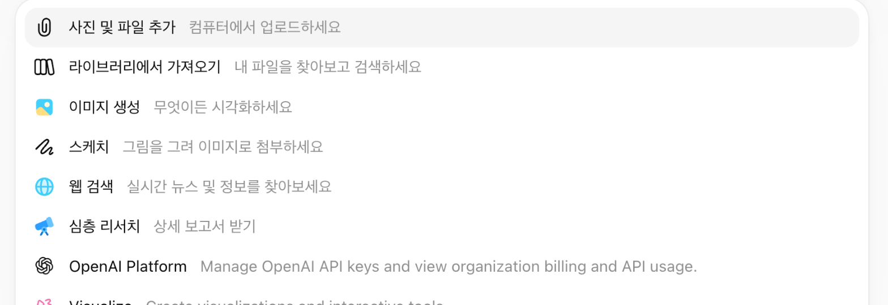
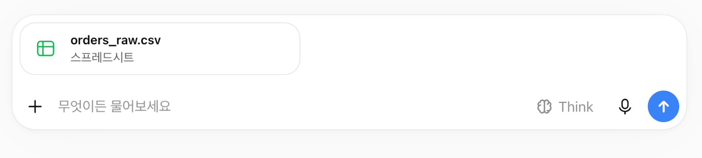
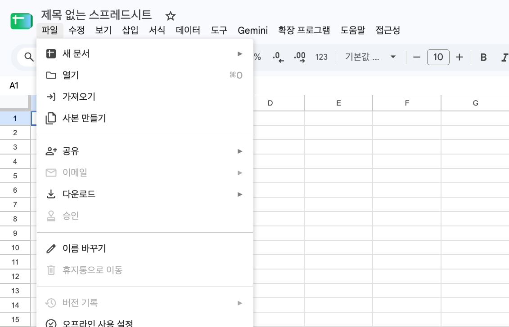
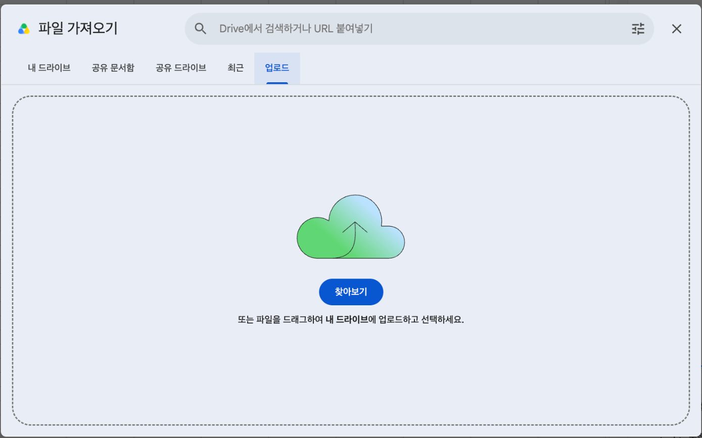

생성형 AI로
데이터를 정리하고, 분석하고, 보고까지
오늘은 AI와 함께 데이터 업무를 처음부터 끝까지 해 보는 날이에요. 실무처럼 정리가 필요한 시트 한 장을 받아서 정리하고, 집계하고, 분석 질문을 던지고, 보고서 한 장으로 마무리해 볼 거예요. 하루 동안 같은 데이터 하나를 끝까지 끌고 가면서, 여러분의 업무에 그대로 옮겨 쓸 수 있는 프롬프트 세트와 검증 습관을 가져가시면 됩니다.
교육 개요
| 시간 | 10:00–17:00 (점심 12:30–13:30, 실습 6시간) |
|---|---|
| 도구 | ChatGPT 유료 계정프롬프트 작성, 함수 생성, 파일 분석, 엑셀 파일 열기 NotebookLM정리한 글을 도식·인포그래픽으로 시각화 스프레드시트ChatGPT 채팅 화면에서 열어 확인(기본), 구글 시트(선택) |
| 교육 목표 | AI를 활용해 데이터 시트를 분석하고 함수·수식·정리 규칙을 생성하여, 데이터 정리 → 요약 → 분석 질문 → 결과 정리까지 AI 중심 워크플로우로 수행할 수 있다 |
| 수업이 끝나면 | ① 내 반복 업무를 단계로 쪼개 AI에게 맡길 부분을 정할 수 있다 ② 필요한 함수를 말로 설명해 받아 내고 직접 검증한다 ③ 정리 규칙을 문서로 만들어 일관되게 적용한다 ④ 분석 결과를 검증용 자료(테스트 항목)와 보고서로 정리한다 ⑤ 다음 달에도 다시 쓸 수 있는 나만의 리포트 프롬프트를 갖는다 |
수업 전 준비
오늘 수업은 브라우저에서 진행해요. 아래 세 가지만 미리 준비해 오시면 됩니다.
- ChatGPT 계정: chatgpt.com에서 유료 계정으로 미리 로그인해 두세요. 오늘 모든 실습은 ChatGPT 유료 계정으로 진행해요.
- NotebookLM 계정: notebooklm.google.com에 구글 계정으로 로그인해 주세요. ChatGPT와는 별도 사이트라서 로그인이 따로 필요해요.
- 스프레드시트: ChatGPT 채팅 화면에서 파일을 바로 열어 확인해요(기본). 구글 시트를 쓰고 싶다면 sheets.google.com에서 열어도 돼요(선택).
실습 파일
오늘 실습은 가상의 온라인 생활용품 쇼핑몰 "셀렉트마켓"의 2026년 3분기(7~9월) 데이터로 해요. 실제 업무 파일처럼 정리할 거리가 곳곳에 들어 있어요. 아래 네 단계로 파일을 준비해요.
1. 파일 다운로드
아래 3개의 파일을 다운로드해 주세요.
2. 파일 열어보는 방법
받은 파일을 열어서 어떤 데이터가 들어 있는지 살펴봐요. 두 가지 방법이 있어요. 기본은 ChatGPT 채팅에서 열어보기예요. 아래 제목을 눌러 펼쳐 보세요.
채팅에서 열어보기 (기본)눌러서 펼쳐 보세요
① 파일 추가 메뉴 열기: ChatGPT에서 새 대화를 열고, 입력창 왼쪽의 [+]를 눌러 [사진 및 파일 추가]를 선택해요.

② 파일 올리기: 받은 orders_raw.csv를 선택하면 입력창에 파일이 붙어요. 파일 이름 아래에 "스프레드시트"라고 표시돼요.

③ 표로 보여 달라고 요청하기: "첨부한 파일을 표로 보여 줘"라고 보내요. 표가 나오면 확대해서 전체 화면으로 열고, 어떤 데이터가 들어 있는지 천천히 훑어보세요. 표가 바로 나오지 않으면 "맨 위 10행을 표로 보여 줘"라고 다시 요청해 보세요.
구글 시트에서 열어보기 (선택)눌러서 펼쳐 보세요
① 가져오기 메뉴 열기: sheets.google.com에서 새 스프레드시트를 만들고, 위쪽의 [파일] 메뉴에서 [가져오기]를 눌러요.

② 파일 올리기: [업로드] 탭에서 [찾아보기]를 눌러 받은 파일을 선택해요.

③ 가져오기: 가져오기 설정 창이 나오면 기본 설정 그대로 [데이터 가져오기]를 눌러요. 표가 열리면 어떤 데이터가 들어 있는지 천천히 훑어보세요. 버튼 이름은 업데이트에 따라 조금씩 다를 수 있어요.
3. 파일 내부 형식
받은 파일은 이름 끝이 .csv예요. CSV는 쉼표(,)로 칸을 나눠 적은 텍스트 파일이에요. 스프레드시트에서 열면 한 줄이 한 행이 되고, 쉼표가 열을 나누는 기준이 돼서 표로 보여요. 파일마다 어떤 형식으로 데이터가 들어 있는지 볼게요.
| 파일 | 한 행이 뜻하는 것 | 열 이름(머리글) | 첫 데이터 행의 값 |
|---|---|---|---|
orders_raw.csv | 주문 한 건 | 주문번호, 주문일, 지역, 채널, 담당자, 상품코드, 수량, 단가, 결제상태 | A1001 · 2026.7.1 · 경기 · 앱 · 이서연 · P001 · 2 · 15,000원 · 결제완료 |
products.csv | 상품 하나 | 상품코드, 상품명, 카테고리, 정가 | P001 · 텀블러 500ml · 리빙 · 15000 |
voc.csv | 고객 문의 한 건 | 접수번호, 접수일, 접수경로, 내용 | V501 · 2026-07-01 · 리뷰 · 예상 도착일보다 3일 늦게 받았습니다. |
스프레드시트(엑셀과 구글 시트가 같아요)에서 쓰는 단어도 알아 둘게요. 이 단어들은 오늘 계속 나와요.
| 용어 | 뜻 | 화면에서는 |
|---|---|---|
| 열 | 세로로 이어진 칸의 줄 | 위쪽의 A, B, C… 글자가 열 이름이에요 |
| 행 | 가로로 이어진 칸의 줄 | 왼쪽의 1, 2, 3… 숫자가 행 번호예요. 주문 한 건이 한 행이에요 |
| 셀 | 칸 하나 | 열과 행을 합쳐 C5처럼 불러요 |
| 머리글 | 맨 첫 행에 적힌 열 제목 | 주문번호, 주문일, 지역… |
| 시트 | 스프레드시트 파일 안의 한 장 | 화면 아래쪽 탭으로 보여요 |
4. 파일 체크리스트
용어와 형식을 알았다면, 아래 내용을 하나씩 확인하면서 orders_raw.csv를 살펴보세요. 확인한 내용은 세션 2에서 AI와 함께 정리해요.
- 열 이름(머리글)에는 어떤 것들이 있나요?
- 행은 모두 몇 개인가요? 맨 아래로 내려가 행 번호를 확인해 보세요.
- 비어 있는 칸이 있나요? 수량 열을 위에서 아래로 훑어보세요.
- 같은 뜻인데 다르게 적힌 값이 있나요? 지역 열을 살펴보세요.
- 날짜(주문일)가 모두 같은 모양인가요?
- 숫자 열(수량, 단가)에 "개", "원" 같은 글자가 섞여 있나요?
타임테이블
오전에는 일하는 방식(워크플로우)과 함수 생성을, 오후에는 같은 데이터를 가공하고 분석해서 보고서로 만드는 흐름으로 진행해요. NotebookLM은 오전에 한 번 가볍게 써 보고, 오후 보고 단계에서 본격적으로 사용할 거예요.
| 시간 | 세션 | 내용 | 도구 |
|---|---|---|---|
| 10:00–11:00 | 1. 생성형 AI로 데이터 분석 '워크플로우' 만들기 |
| ChatGPTNotebookLM |
| 11:00–12:30 | 2. 생성형 AI 활용한 함수 생성 |
| ChatGPT스프레드시트 |
| 12:30–13:30 | 점심 (진행에 따라 변경 가능) | ||
| 13:30–14:30 | 3. 프롬프트 활용한 데이터 가공하기 |
| ChatGPT스프레드시트 |
| 14:30–15:30 | 4. AI로 데이터 분석하기 |
| ChatGPTNotebookLM |
| 15:30–16:30 | 5. 문제 이해와 인사이트 도출 |
| ChatGPTNotebookLM |
| 16:30–17:00 | 6. 리포트 자동화 구현 |
| ChatGPT |
생성형 AI로 데이터 분석 '워크플로우' 만들기
이 시간에는 먼저 내 업무를 스케치하고, 그 업무를 5가지 단계(파악 · 정리 · 요약 · 분석 · 보고)로 쪼개서 살펴봐요. 어떤 단계에서 데이터 분석이 일어나는지 확인하면서, 내 업무 방식을 하나의 프로세스로 정의해 볼 거예요. 이렇게 정의해 두면 AI에게 무엇을 어느 단계에서 부탁할지 분명해져요. 그다음에는 프롬프트를 잘 쓰는 방법도 배워요.
1-1. 내 업무를 스케치하고 5단계로 쪼개기
네 단계로 진행해요. 먼저 메모장에 내 업무를 자유롭게 적고, 그중에서 데이터를 다루는 일을 찾아요. 그다음 그 일을 내 손으로 직접 풀어서 써 보고, 마지막에 AI와 함께 표로 정리해서 파일로 저장합니다.
STEP 1. 메모장에 내 업무 스케치하기
월요일 09:30 주문 엑셀 내려받기 ★
월요일 10:00 팀 회의
월요일 11:00 지난주 지역별 매출 합계 만들기 ★
월요일 14:00 팀장님께 주간 매출 보고 ★
STEP 2. 3가지 업무를 풀어서 직접 써 보기
이 수업에서는 아래 세 가지 업무를 예로 들게요. 내 업무에 별표 친 일이 있다면 그 일로 바꿔도 좋아요.
- ① 주문 엑셀 내려받기
- ② 지역별 매출 합계 만들기
- ③ 주간 매출 보고하기
이 세 가지를 내가 실제로 어떻게 진행하는지, 어디를 누르고 무엇을 입력하는지를 줄줄이 풀어서 직접 써 보세요. 여기서는 AI를 쓰지 않고 내 손으로 써야 해요. 내가 어떻게 일하는지는 나만 알고 있기 때문이에요.
1. 쇼핑몰 관리자 페이지에 로그인한다.
2. 왼쪽 메뉴에서 [주문 관리]를 누른다.
3. 기간을 지난주 월요일~일요일로 바꾸고 [검색]을 누른다.
4. 오른쪽 위의 [엑셀 다운로드]를 눌러 바탕화면에 저장한다.
5. 저장한 파일을 열어 맨 위 열 이름과 행 개수를 확인한다.
글을 쓰다가 참고가 될 만한 자료가 있으면 메모장에 같이 모아 두세요.
- 내가 로그인하는 관리자 페이지 주소(링크)
- 엑셀을 내려받는 화면을 캡처한 이미지
- 지금 쓰고 있는 보고서 양식 파일
이 자료들은 다음 단계에서 AI에게 내 업무를 정확히 알려 주는 재료가 돼요.
STEP 3. AI로 표 만들기
이제 AI를 쓸 차례예요. STEP 2에서 쓴 글을 ChatGPT에게 보여 주고, 표로 정리해 달라고 요청해요. 아래 프롬프트를 복사해서 ChatGPT에 붙여 넣고, [ ] 부분을 내 내용으로 바꿔 보내세요.
나는 [직무]이고, 아래는 내가 하는 업무 3가지를 직접 풀어서 쓴 글이야. [STEP 2에서 쓴 글 붙여넣기] 이 3가지 업무를 하나의 표로 정리해 줘. - 행: 업무 3가지 (주문 엑셀 내려받기 / 지역별 매출 합계 만들기 / 주간 매출 보고하기) - 열: 해당 단계(파악·정리·요약·분석·보고 중 하나) / 내가 하는 일(순서대로) / 사용하는 화면이나 도구 / 결과물 내가 쓴 글에 없는 내용은 새로 만들지 말고, 글에 없는 칸은 '내용 없음'으로 적어 줘.
그러면 ChatGPT가 이런 표를 만들어 줘요 (예시)
| 업무 | 해당 단계 | 내가 하는 일 (순서대로) | 화면·도구 | 결과물 |
|---|---|---|---|---|
| 주문 엑셀 내려받기 | ① 파악 | 1) 관리자 페이지에 로그인 2) [주문 관리] 클릭 3) 지난주 기간으로 [검색] 4) [엑셀 다운로드]로 저장 5) 열 이름과 행 개수 확인 | 쇼핑몰 관리자 페이지, 스프레드시트 | 지난주 주문 엑셀 파일 |
| 지역별 매출 합계 만들기 | ③ 요약 | 1) 지역 열과 금액 열 확인 2) 지역별로 금액을 더함 3) 합계를 표로 정리 | 스프레드시트 | 지역별 매출 합계표 |
| 주간 매출 보고하기 | ⑤ 보고 | 1) 합계표에서 결론 한 줄 정하기 2) 근거 숫자 3개 고르기 3) 한 장으로 정리해 팀장님께 보고 | 스프레드시트, 보고서 양식 | 주간 매출 보고서 한 장 |
위 표는 예시이고, 내가 쓴 글에 따라 내용이 달라져요. 표가 나오면 내가 쓴 글과 하나씩 비교하며 확인하세요. 내가 쓰지 않은 내용이 들어갔거나 빠진 내용이 있으면 ChatGPT에게 다시 고쳐 달라고 해요. 빠진 단계가 없는지는 ChatGPT가 알 수 없어요. 내 업무를 아는 사람은 나뿐이라서, 이 확인은 내가 해야 해요.
표의 "해당 단계"가 무슨 뜻인지 궁금하다면, 5단계를 아래 표로 정리해 두었으니 참고하세요.
| 단계 | 이 단계에서 하는 일 | 실습 방법 | 예시 (주문 데이터) |
|---|---|---|---|
| ① 파악 | 파일을 열어 어떤 열이 있고, 어떤 값이 들어 있는지 훑어봐요 | 1) 열 이름을 모두 적어요 2) 맨 위 10행과 맨 아래 10행을 봐요 3) 열마다 필터 화살표를 눌러 어떤 값이 섞여 있는지 확인해요 | "지역" 열의 필터를 열었더니 서울, 서울시, seoul이 따로 나온다 |
| ② 정리 | 같은 뜻인데 다르게 적힌 값을 맞추고, 중복·빈칸을 처리해요 | 1) 원본 열은 그대로 두고 오른쪽에 새 열을 만들어요 2) 통일 규칙을 정해 새 열에 적용해요 | 서울시, seoul → 서울로 통일 똑같은 주문 5건 삭제 |
| ③ 요약 | 기준을 하나 정해서 합계·건수를 구해요 | 1) 기준 열을 정해요(지역, 채널, 월 등) 2) 그 기준으로 합계를 구해요 | 지역별 매출 합계 |
| ④ 분석 | 요약한 숫자를 비교하며 질문을 던지고 의미를 찾아요 | 1) 궁금한 질문을 하나 정해요 2) 비교 대상을 정해요(지난달, 1위와 꼴찌 등) | 8월 매출이 7월의 2배가 넘는데, 왜일까? |
| ⑤ 보고 | 결과를 읽는 사람이 한눈에 알 수 있게 한 장으로 정리해요 | 1) 결론을 한 줄로 써요 2) 근거가 되는 숫자 3개를 골라요 | "3분기 매출의 약 절반(50%)이 앱 채널에서 나왔다" |
STEP 4. 만들어진 결과를 문서로 다운받아 볼까요?
ChatGPT가 만든 표는 대화창 안에만 있어요. 이 표를 동료에게 보내거나 보고에 쓰려면 파일로 받아 두면 편해요. 같은 표를 Word 문서와 엑셀 파일로 받아 보면서 프롬프트로 파일을 요청하는 연습을 해 볼게요. .html 파일은 선택 항목이라 강사가 시연으로 보여 드려요. 모든 방법은 STEP 3에서 표를 만든 같은 대화창에서 이어서 요청해요.
방법 A. Word 문서(.docx)로 받기
방금 만든 표를 Word 문서(.docx) 파일로 만들어 줘. - 제목은 '내 업무 프로세스'로 해 줘 - 표 아래에 전체 흐름을 한 줄로 요약해서 넣어 줘 - 다운로드할 수 있는 파일로 줘
방법 B. 엑셀 파일(.xlsx)로 받기
방금 만든 표를 엑셀(.xlsx) 파일로 만들어 줘. - 시트 이름은 '업무프로세스'로 해 줘 - 첫 행은 열 제목으로 하고, 열 너비는 내용에 맞게 조절해 줘 - 다운로드할 수 있는 파일로 줘
방법 C. (선택) 웹문서(.html)로 받기: 강사 시연
.html 파일은 크롬 같은 웹 브라우저로 여는 문서예요. 웹페이지처럼 열려서 다른 사람에게 보여 주기 좋아요.
방금 만든 표를 .html 파일 하나로 만들어 줘. - 맨 위에 제목: '내 업무 프로세스' - 표는 깔끔한 디자인으로, 단계별로 다른 색 띠를 넣어 줘 - 한글이 깨지지 않도록 UTF-8로 작성해 줘 - 다운로드할 수 있는 파일로 줘. 파일로 줄 수 없으면 코드 전체를 코드 블록 하나로 줘.
이 방법은 선택 항목이에요. 강사가 화면으로 시연해 보여 드리니, 따라 하지 않아도 괜찮아요. 직접 해 보고 싶다면 위 프롬프트를 보내 보세요.
| 파일 종류 | 이럴 때 좋아요 |
|---|---|
| Word (.docx) | 글로 정리해서 공유하거나, 문장을 고쳐서 문서로 쓸 때 |
| 엑셀 (.xlsx) | 표를 이어서 계산하거나 정리할 때 |
| 웹문서 (.html, 선택) | 브라우저에서 보기 좋게 바로 열어 보여 줄 때 |
1-2. 프롬프트 엔지니어링: ChatGPT에 잘 요청하는 법
사용 파일 제공 파일 없이, 아래의 연습용 데이터 10행으로 실습해요.
ChatGPT에게 일을 시킬 때 쓰는 요청 글을 프롬프트라고 해요. 원하는 결과가 나오도록 프롬프트를 설계하고 다듬는 일은 프롬프트 엔지니어링이라고 해요. 목표와 기준이 분명하지 않으면 ChatGPT는 내 상황을 추측해서 답해요. 그래서 오늘은 프롬프트를 아래 세 줄로 써요.
- 요청: 무엇을 해 달라는지
- 내용: 무엇을 줬는지 (파일, 데이터, 상황)
- 형식: 어떤 모양으로 받을지 (표, 수식 1개 등)
실습. 같은 일을 두 가지 프롬프트로 부탁해 보기
스프레드시트 C열 '지역'에 같은 지역이 다르게 적혀 있어요. 이것을 '서울'로 통일하는 수식을 받으려고 해요. 먼저 연습용 데이터를 스프레드시트 A1 셀에 붙여 넣으세요. 열이 A(주문번호), B(채널), C(지역)로 나뉘어 들어가면 돼요.
주문번호 채널 지역 A1001 앱 서울 A1002 웹 서울시 A1003 앱 서울특별시 A1004 앱 seoul A1005 웹 경기 A1006 앱 경기도 A1007 오프라인 부산 A1008 웹 부산광역시 A1009 앱 서울 A1010 웹 Seoul
프롬프트 A. 요청만 있는 경우
지역 정리하는 함수 알려 줘
어떤 스프레드시트인지, 지역이 어떻게 적혀 있는지 모르니 일반적인 설명이 나와요.
프롬프트 B. 요청 / 내용 / 형식을 쓴 경우
새 대화창에서 아래 프롬프트를 보내 보세요. 파일은 올리지 않아도 돼요.
요청: C열 '지역'을 모두 '서울'로 통일하는 수식을 만들어 줘. D2 셀에 넣을 거야. 내용: 스프레드시트를 써. C열에 서울, 서울시, 서울특별시, seoul이 섞여 있어. 형식: 수식 1개, 한 줄 설명, 테스트 값 3개
ChatGPT의 답은 매번 조금씩 달라요. 아래는 이런 모양으로 나온다는 예시예요. A보다 바로 쓸 수 있는 답이 나와요.
수식 (D2)
=IF(OR(TRIM(C2)="서울",TRIM(C2)="서울시",TRIM(C2)="서울특별시",LOWER(TRIM(C2))="seoul"),"서울",TRIM(C2))설명 앞뒤 공백을 지우고, 서울을 뜻하는 표기이면 "서울"로 바꿔요. 서울이 아닌 값은 그대로 둬요.
테스트 값
· "서울시" → 서울
· "Seoul" → 서울
· "경기" → 경기 (그대로)
받은 수식을 확인해요. 기본은 ChatGPT에게 "이 수식을 적용한 표를 보여 줘"라고 요청해 채팅 화면에서 결과를 보는 거예요. 구글 시트를 쓴다면 연습용 데이터를 A1 셀에 붙여 넣고, 수식을 D2에 붙여 넣은 뒤 D2 셀 오른쪽 아래 모서리의 작은 네모(채우기 핸들)를 더블클릭해 아래 행까지 채우세요. 결과가 아래와 같은지 확인해 보세요.
| C열 (원래 값) | D열 (기대 결과) |
|---|---|
| 서울 / 서울시 / 서울특별시 / seoul / "서울 " / Seoul (6행) | 모두 서울 |
| 경기, 경기도 | 경기, 경기도 (그대로) |
| 부산, 부산광역시 | 부산, 부산광역시 (그대로) |
결과를 보고 고쳐 나가기
경기도와 부산광역시는 요청에 없어서 그대로 남았어요. 같은 대화창에서 필요한 부분만 이어서 요청하세요. 이렇게 결과를 보고 고쳐 나가는 것이 프롬프트 엔지니어링이에요.
요청: 경기도는 '경기'로, 부산광역시는 '부산'으로도 통일하도록 수식을 고쳐 줘. 내용: 수식이 너무 길어지면 매핑표(원래 표기 → 통일할 표기)를 따로 만들어 조회해도 돼. 형식: 수정한 수식 1개
프롬프트 쓰기 막막할 때
ChatGPT에게 "프롬프트를 만들어 달라"고 요청할 수도 있어요. 이렇게 프롬프트에 대한 프롬프트를 메타 프롬프트라고 해요. [ ] 부분을 내 일로 바꿔 보내 보세요.
요청: [하고 싶은 일]을 ChatGPT에게 잘 시킬 수 있는 프롬프트를 만들어 줘. 내용: 나는 [직무]이고, 필요한 정보가 더 있으면 먼저 나에게 질문해 줘. 질문은 5개 이내로 해 줘. 형식: 요청 / 내용 / 형식 세 줄
더 알아보고 싶다면 OpenAI의 공식 안내를 참고하세요.
1-3. NotebookLM 업무 흐름을 그림으로 바꿔 보기
업무 순서를 글이나 표로만 보면 흐름이 잘 안 보여요. 그림으로 바꾸면 순서와 흐름이 한눈에 들어와요. 이렇게 업무 순서를 그림으로 그리는 일을 도식화라고 해요. 먼저 오늘 자주 나올 용어를 정리하고, 그다음 NotebookLM을 직접 써 봅니다.
| 용어 | 뜻 | 오늘 수업에서는 |
|---|---|---|
| 워크플로우 (workflow) | 일이 시작해서 끝나기까지 흐르는 순서 | 파악 → 정리 → 요약 → 분석 → 보고 |
| 프로세스 | 일을 진행하는 방식과 절차. 워크플로우와 거의 같은 뜻으로 써요 | 1-1에서 정의한 내 업무 방식 |
| 도식화 | 글이나 표를 도형과 화살표로 한눈에 보이게 그리는 것 | 내 업무 순서를 그림으로 그리기 |
| 시각화 | 글이나 숫자를 그림·차트로 바꿔 보여 주는 것 | 세션 4에서 매출 차트 만들기 |
| 인포그래픽 | 정보를 그림과 짧은 글로 정리한 한 장짜리 그림 | NotebookLM이 만들어 주는 결과물 |
NotebookLM은 내가 넣은 글(소스)을 바탕으로 요약, 마인드맵, 인포그래픽 같은 결과물을 만들어 주는 구글의 AI 도구예요. 넣은 글을 바탕으로 만들기 때문에, 짧고 구조가 분명한 글을 넣을수록 그림이 잘 나와요. 아래는 주간 매출 보고 업무의 5단계를 한 글로 정리한 예시예요. 이 글을 메모장에 복사해 두고 따라 해 보세요.
주간 매출 보고 업무 흐름 1. 파악: 쇼핑몰 관리자에서 주문 엑셀을 내려받아 열 이름과 값을 훑어본다 2. 정리: 지역과 결제상태 표기를 통일하고 중복 주문을 지운다 3. 요약: 지역별 매출 합계를 만든다 4. 분석: 지난주와 비교해 늘어난 지역과 줄어든 지역을 찾는다 5. 보고: 결론 한 줄과 근거 숫자 3개로 한 장 보고서를 만든다
① 로그인하기: notebooklm.google.com에 접속해 구글 계정으로 로그인해요.
② 새 노트북 만들기: [새 노트북 만들기]를 눌러 노트북을 하나 만들어요. 노트북은 소스와 결과물을 한곳에 모아 두는 작업 공간이에요.
③ 소스로 글 붙여넣기: 소스를 추가하는 화면에서 붙여넣은 텍스트(복사한 텍스트)를 고르고, 위에서 복사한 글을 붙여 넣어요.
④ Studio에서 인포그래픽 만들기: 화면 오른쪽의 Studio(스튜디오) 패널에서 [인포그래픽]을 눌러요. 그림의 방향(가로, 세로, 정사각형)과 자세한 정도를 고르고, 요청 칸에 "5단계 흐름이 한눈에 보이게 만들어 줘. 단계 이름은 원문 그대로 써 줘."라고 적은 뒤 만들어요.
⑤ 확인하고 저장하기: 완성된 그림의 단계 이름과 숫자가 원문과 같은지 확인하고, 다운로드 아이콘으로 이미지를 저장해요. 흐름이 아니라 개념의 관계를 보고 싶다면 Studio의 [마인드맵]도 만들어 비교해 보세요.
화면의 버튼 이름은 업데이트에 따라 조금씩 달라질 수 있어요.